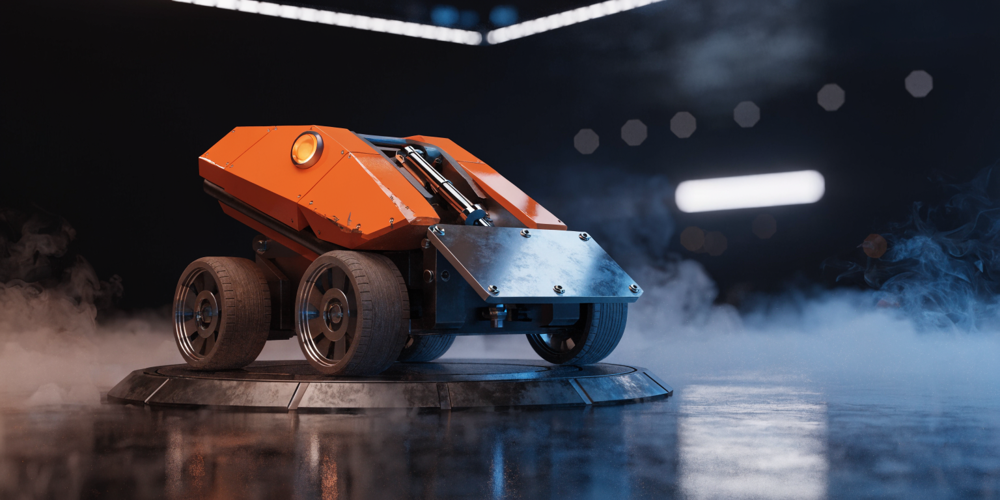
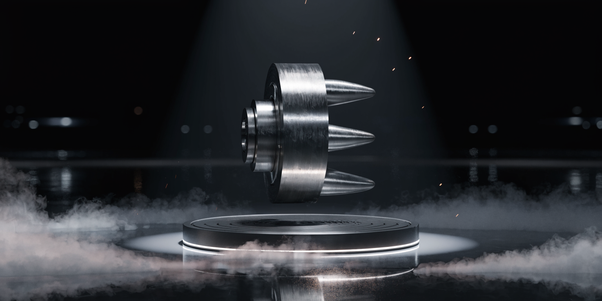
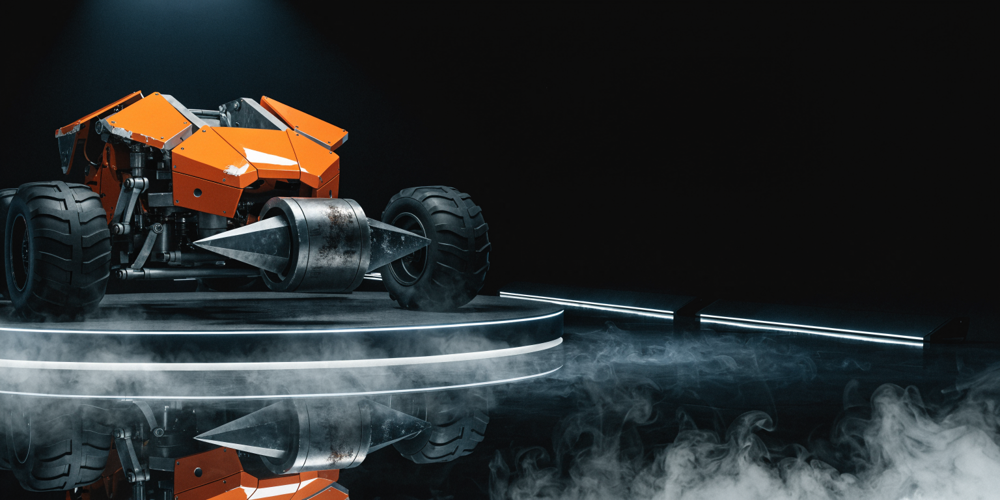
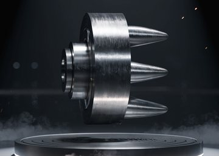
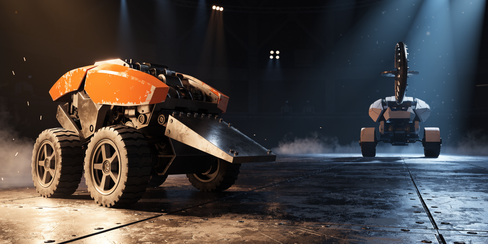
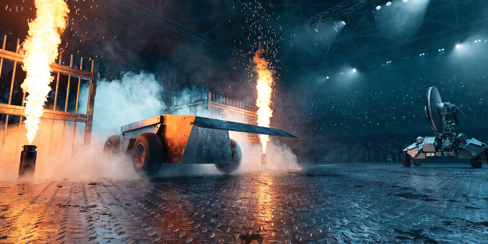
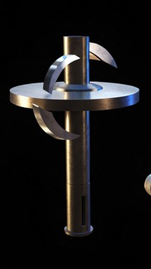
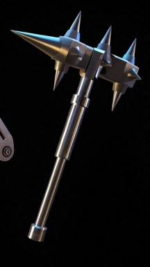
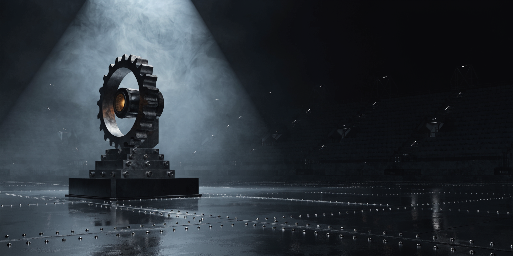

Progression screens, v1
Work in progress, stopped at the session limit. Unfinished: not yet checked in a browser (layout of the dense frames, text overflow at small widths), the Replay buttons may point at the wrong frame, and the backdrop for the opponent shot in the walk-out is a crop, not its own render.
Five moments where the game pays you back, designed in the look the owner picked on the v2 page: M2 face-off for the menu and G1 assembly bay with G2's pull-out for the garage. The interface is HTML over the same kind of target, not current models backdrops. Four new backdrops were rendered for this page (a part alone on the turntable, the pyro walk-out, your machine wearing a new weapon in the showroom, the championship trophy); everything else reuses the v2 set.
The rule the whole page follows is Insomniac's: the thing you earned is always shown off, on the stage, before you are asked to do anything with it. Every screen keeps one primary action, at most two boxed panels, no outlines and no accent bars. Emphasis comes from the white plate, type size and stage light. Frames animate once when they scroll into view; press Replay to see a sequence again.
Each option has three notes: what moves (the 3D stage and the interface), what you hear (with the haptic), and what the pad does (A confirm, B back, X second action, shoulders page, Menu skips).
1. The payoff after a win
Today a win is a ledger in a box that counts for 0.4 seconds and a comma-separated list of new parts ([18] in the teardown). The new version is a sequence with three beats that always run in the same order: the scrap, the medals, the new parts. The machine you just won with stays on the stage the whole time. Any tap hurries the current beat to its end state; it never skips a part reveal, because that is the point of the screen.
The stage show
The whole screen is the show: no panel at all, the scrap pours out of the machine into a giant number, the medals stamp across the middle, then the machine rolls aside and the new part rises on the turntable alone.
Beat 1, the scrap. Bolts spray off the machine in the arena's collect pitch ramp and fly to the counter; each ledger line lands with its own click. The Level bar fills to the diamond and the diamond lights: that is where the new part comes from, and the name is already under it.
Beat 2, the medals. The camera pushes in 6 % and the key dims so the medals own the frame. Each one drops from above and stamps with a hit-stop of 60 ms; a medal you already had lands silver-dim without the stamp. A missing medal is a dark hollow that tells you how to get it.

Next: Titanium plates
Beat 3, the part. Your machine rolls off the turntable to stage left and out of frame; the floor ring lights, and the part rises out of the dry ice on the empty turntable, turning at 20 degrees a second under one spotlight. Fit it for 240 buys it and bolts it on right there. Shop opens the showroom on this part. Next brings the second part up the same way. The last part ends on Continue.

The fit. Your machine rolls back onto the turntable, the old weapon lifts off on the gantry, the new one drops onto the socket with an impact wrench burst and a bolt seat. Scrap counts down in red. This is the one place in the game where buying and seeing are the same moment.
P1 timing, a Series 1 win with one new part
What moves
The stage does the work: the machine you won with stays lit through beats 1 and 2 with its fresh scars, then drives itself off the turntable (a real drive animation, not a cut) so the part can take its place. The Level bar has named milestones, so the fill tells you what the next win buys. A finished Series adds a fourth beat: the Series trophy on the turntable and the rival's concession line in the ticker.
What you hear
The arena's bolt-collect sound with its pitch ramp is the spine: one bolt per 10 scrap, capped at 40, rising a semitone every 5. Ledger clicks sit above 2 kHz. Each medal is a metal stamp with a short ring and a rigid haptic; a medal already owned is a softer tap. The reveal is a pneumatic lift, a two-note sting and the crowd bed swelling. Fit it is the impact wrench and bolt seat from the garage.
What the pad does
A hurries the current beat, then on the reveal A is Fit it. X is Shop. Right shoulder is Next part. B on the reveal leaves the part unbought and goes to the next one (never back out of the sequence by accident). Menu jumps straight to the last beat. The pad rumbles with each medal stamp.
The broadcast card
Quicker and cheaper: the machine turns on the left, one panel on the right holds the ledger, the three medals and the Level bar; new parts arrive as cards that flip over the panel, then open onto the turntable only if you tap them.
What moves
The panel slides in from the right in 0.25 s; the ledger, total, medals and Level fill all happen inside it in about 3 s. The machine keeps turning on the left. Cards drop onto the middle with a small overshoot. See it takes you to the P1 turntable reveal; otherwise the part is only a picture on a card.
What you hear
The same bolt-collect ramp and medal stamps, compressed; a card flip whoosh per new part. Fewer stage moments, so less for audio to sell.
What the pad does
A on the panel continues to the cards; on a card A is Fit it, Y is See it, X is Shop, right shoulder is the next card. B closes the card without buying.
Recommendation: P1. It is the Ratchet moment the teardown says the game is missing, and it spends the stage we are already building. P2 is what we would ship if the art pass slips: it keeps the medals and the milestones but the part is still a picture. Build P1 so that a tap at any point jumps to the reveal, so a player on their fortieth win is through it in two taps.
2. The shop as a showroom
Today: 45 rows of a table, BUY turns into BOUGHT, and fitting is four screens away. The new rule: every part you look at is already on your machine. The stage builds a preview config with the part swapped in (the stage already takes a bot config), and the stats compare against what is fitted, in green and red fills, never outlines.
Showroom with a part row
Your machine large on the showroom turntable wearing the part in focus; the parts as a card row along the bottom, the comparison and Buy and fit in the one panel on the right.Browsing. The part in focus is on your machine; moving along the row swaps it live (0.15 s drop, a small suspension bounce). A locked part says how many wins away it is, never just a Level. The filter that names your next opponent is the one that makes the shop a decision, not a list.

Left, the purchase. One press: the price leaves the counter in red over 0.6 s, a white YOURS plate stamps, the gantry swaps the part (it is already on the machine, so the swap is a bolt-down, not a change). Undo fit puts the old part back at no cost. Right, the menu entry. Shop becomes a tile on the M2 row, second rank under Continue career. Its badge counts real things only: new parts you can afford. When there are none it is a plain tile.
What moves
Entering from the menu, the face-off cuts to the showroom turntable (the M1 stage) and the camera settles at 40 mm in 750 ms. Focusing a card swaps the part on the machine and turns the turntable so the socket faces the camera. Stat bars resolve over 300 ms, numbers count over 400 ms. The next-opponent filter dims every row that does not counter them.
What you hear
Focus tick, a pneumatic hiss as the part drops on, a rising two-note chirp when the delta is mostly better and a falling one when mostly worse. Buy is a register-free metal sound: the bolt-collect ramp played backwards as the scrap leaves, then the impact wrench. Cannot afford is a dull thud and a warning haptic, never a shake.
What the pad does
Left and right move along the card row, shoulders change category, triggers cycle the filters. A is Buy and fit (Fit on an owned part). Y toggles the stat view between the delta and the part's own numbers. B backs out. The right stick orbits the machine.
The vendor pedestal
The part is the hero first: it turns alone on the pedestal with its own numbers; Try it on flies it onto your machine and the view becomes S1's comparison.What moves
Each part rises on the pedestal as you move down the list (0.5 s), turning at 20 degrees a second with a strip light sweeping along it. Try it on: the part flies off the pedestal, the camera pans to your machine, the part bolts on and the panel changes to S1's deltas.
What you hear
A pneumatic lift for every part change, which gets tiring after ten; a longer fly-in whoosh and the impact wrench on Try it on.
What the pad does
Up and down move the list, A is Try it on, X is Buy, B returns from the machine to the pedestal and then out.
Recommendation: S1. The owner's ask is the part on your own machine, and S1 does that on the first frame with no extra press; S2 adds a step before the only question that matters (is it better than what I have). S2's pedestal is not wasted: it is the P1 reveal, so the part gets its solo moment once, when you earn it, and lives on your machine ever after.
3. The walk-out
The owner approved a 3 to 4 second skippable entrance with pyro before every fight. The question is how the broadcast package (SwiftUI) and the 3D entrance (Godot) share those seconds. Both options agree on one rule: the 3D camera owns the timing and the interface follows its cuts. The arena sends a beat signal at each cut (gate open, your machine clear, opponent shot, wide), and SwiftUI brings in the lower third that belongs to that shot. Nothing waits on the interface.
Graphics on the entrance
The tale of the tape is broadcast graphics laid over the live pyro entrance, each piece arriving on the camera cut it belongs to; FIGHT is the countdown at the end, not a button.
Left: gate opens, pyro columns fire, your machine rolls through the smoke. The arena card sits top left for the whole entrance; your name slides in the moment your machine is clear of the gate. Right: the camera cuts across the floor to the opponent in cold light (drawn here as a crop of the same render). Their name and the rival's line come in with the cut, the house bot tag lights as its corner flares, and the tape settles under both. At 3.0 s the camera pulls to the wide, the tape collapses to the two names in the fight HUD's corners, and the countdown runs 3, 2, 1 with the tape already gone.
W1 timing, 3.6 s with the countdown (the entrance itself is skippable; the countdown is not)
What moves
Godot runs the camera, the pyro and the machines; it emits four beat signals. SwiftUI lower thirds enter from the edge they belong to (yours from the left, theirs from the right) in 0.25 s and leave in 0.18 s, upright, with no skew and no accent bar. Tap anywhere skips straight to the wide shot and the countdown: the graphics fast-forward to their end state rather than vanishing, so the names still land.
What you hear
Klaxon and gate chain, two pyro whumpfs with a heavy haptic each, the crowd roar rising under your drive motor, then the opponent's weapon hum panned to their side on the cut. No announcer (owner rule): the rival's line is text, and it is also in the VoiceOver order, which the ticker never was.
What the pad does
Any button skips to the countdown. Nothing else is live; the pad is already in fight mapping so the first input after 1 counts. The pad's light bar (where there is one) takes the player's livery colour on your entrance.
Tape card, then the entrance
A still face-off before the fight: both machines lit on the M2 stage, the full tale of the tape in one panel with FIGHT; pressing FIGHT plays the pyro entrance with only the names over it.What moves
The M2 face-off stage, with the camera dollying in slowly. The panel fades up over it. FIGHT fades the panel and hands over to the same pyro entrance as W1, but with only the two names on it.
What you hear
The arena room tone and the opponent's idle hum while you read; then the entrance sounds as in W1.
What the pad does
A is FIGHT, B goes back to the Series screen, Y opens the full scouting report.
Recommendation: W1. It turns the entrance itself into the tale of the tape instead of adding a screen and a press in front of it, and it keeps every fight to one tap from the Series screen. W2 duplicates what the M2 menu and the scouting report already show. The full comparison (armour against their weapon, the suggestion) stays on the scouting report, one link from the Series card.
4. The unified garage
Decision 12: one garage. It replaces both the menu Workshop and the career Garage, at the G1 assembly-bay layout, and it owns your stable, repairs (paid, always, decision 2), fitting and paint. Swipe or shoulder between machines; the category row along the bottom carries each part's condition and bill; one panel on the right. The next opponent is named everywhere a choice is made (teardown item 8).
Repair on the machine
The overview shows the damage where it is: broken parts glow on the machine, each category tile carries its own bill, and Repair all is the one primary button when there is anything to pay.
 FlipperFitted16 kg
FlipperFitted16 kg
Vertical spinnerCounters24020 kg
AxeToo slow18 kg Horizontal spinner2 wins
Horizontal spinner2 winsLeft, the overview. The machine carries its damage as small red chips pinned to the parts, the category tiles carry the bills, and the panel answers the only question the garage has before a fight: am I ready for the next one. Every scrap cost is a red number, income is amber. Right, a category open. The camera moves to the weapon socket at 70 mm in 750 ms, the fitted part lifts a few centimetres off and turns (the G2 pull-out), and every row is compared with the fitted part and tagged against the next opponent. Unowned rows buy in place; the shop is never a detour.
What moves
Switching machines rolls one off the turntable and the next on (0.9 s, the gantry arm follows). Damaged parts pulse a low red emissive in time with the chips. Repair all: sparks from the gantry welder travel part to part in bill order, each chip clears with its number counting to zero, the paint's scuffs stay (wear is honest, only function is repaired). Paint opens the paint wall as the sixth category; hovering a swatch repaints the machine before you commit.
What you hear
Bay hum and tool clinks under everything. Repair is a welder crackle per part with the scrap leaving in the reverse bolt ramp. Category open is the pneumatic hiss under the camera move; the part lift is a servo whine; fit is the impact wrench. A part below 25 % crackles faintly when the camera is near it.
What the pad does
Shoulders switch machines on the overview and categories when one is open. Down on the overview drops to the category row. A is the panel's primary (Repair all, Fit, Buy and fit). X is Test drive, Y is Shop. The right stick orbits. B closes a category, then leaves the garage.
Repair as the pit bay
Repair is its own first tile on the category row, a pit crew stop: the machine turns to show its worst side and the panel lists each part's bill with a pay button per part.
What moves
The camera swings to the most damaged face; the selected row's part glows. Paying runs the same welder pass as G1a, one part at a time.
What you hear
As G1a, with a pit crew radio crackle when the tile opens.
What the pad does
Up and down pick a part, A pays for it, X repairs all. Otherwise as G1a.
Recommendation: G1a. Damage belongs on the machine, and a repair is a fitness check before a fight, not a separate place to visit. G1a also keeps the category row at six tiles, which is what the G1 metrics were drawn for. Per-part repair (the useful idea in G1b) still works in G1a: tapping a red chip or a bill on a tile pays just that part.
5. After the campaign
Decision 8: both Championship Defence (the five Series again at Masters AI with the rivals' machines rebuilt, medals to win, a trophy) and the Daily broadcast (one seeded exhibition a day, the same for everyone, a rule twist, a Game Center leaderboard, titles and paint only, the last seven days always playable, no streaks). The question is how they sit on the M2 menu once the career card has nothing left to continue.
Defence takes the face-off
The menu does not change shape: the champion stands in the warm light, the first challenger rolls into the cold light, Defend the title is the one primary, and the Daily broadcast becomes the first tile with today's rule written on it.The career never ends on a dead menu. The face-off keeps working because Defence has an opponent: each of the five Defence Series ends with a Masters rival rebuilt for the rematch, and they walk out with W1 as before. The Today badge is the only badge on the row; it goes away once you have played today's, and nothing is lost if you skip a day.
The Daily screen. One rule sentence, the score formula in plain words, your best and your place, and the reward stated up front (paint and titles, never power). The last seven days are text links, always playable. Watch the best run plays the top ghost's replay, which the replay system already records.
What moves
On the menu, the challenger rolls into the cold light the first time you arrive after the final, with its rebuilt part under a brief strip light pass. The Daily tile's thumbnail is that day's arena with today's twist drawn on it (a flame curtain for the Furnace). On the Daily screen the stage is that arena, dimmed, with the pyro columns idling.
What you hear
After the campaign the menu theme gains its full arrangement (the reward for finishing). Focusing the Daily tile brings the crowd bed up a little. Posting a score on the Daily screen plays a short broadcast sting and the leaderboard row slides to its new place.
What the pad does
On the menu, A is Defend the title and down drops to the tile row with Daily first. On the Daily screen, A is Fight again, shoulders page the seven days, X toggles Everyone and Friends, Y is Watch the best run.
The champion's showroom
After the campaign the menu becomes M1: no opponent, just the trophy on the showroom stage, and two cards of equal rank on the right for Defence and the Daily.
What moves
The trophy turns slowly under one spot; your machine stands beside it (not drawn in this target). The two cards slide in from the right. This is a second menu layout to build and keep in step with M2.
What you hear
Empty arena room tone and a distant crowd, which suits a victory lap but loses the tension of M2.
What the pad does
Up and down between the two cards, A to enter, down again to the tile row.
Recommendation: E1. It keeps one menu layout for the whole life of the game, it keeps the "what happens next" rule (there is always an opponent in the cold light), and it gives the Daily a tile with today's rule written on it, which is the whole pitch of a daily. E2 breaks the one-hero rule with two equal cards. Keep E2's trophy for the Hall of fame, and for the one visit right after the final as the campaign's ending shot, before the challenger rolls in.
Recommendations
Scrap, medals, then each new part alone on the turntable with Fit it and Shop. P2 is the fallback if the art pass slips.
The part is on your machine from the first frame, with deltas against what is fitted and one Buy and fit. Shop joins the M2 tile row with an honest count of new parts you can afford.
The camera owns the timing and signals each cut; the tale of the tape rides the entrance, tap skips to the countdown.
Damage chips on the parts, bills on the category tiles, Repair all as the one primary when anything is owed; each category opens with the pull-out and rows that name the next opponent.
The menu keeps its shape; Defend the title is the primary and the Daily is the first tile with today's rule on it.
What the builders need that is new: a beat signal from the arena entrance to SwiftUI (four named beats), a preview bot config for the shop and the garage (the stage already accepts one), a solo-part turntable mode for the reveal, milestones on the Level bar (from the unlock table), three medal flags on each match result, and a Daily seed plus score formula. Backdrops on this page are targets, not current models; four were rendered for it with Recraft (8 credits) and sit in docs/look/img3/.